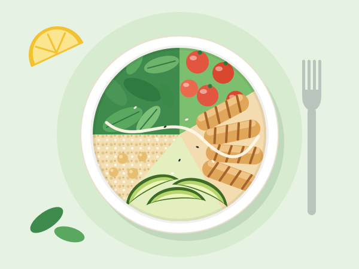
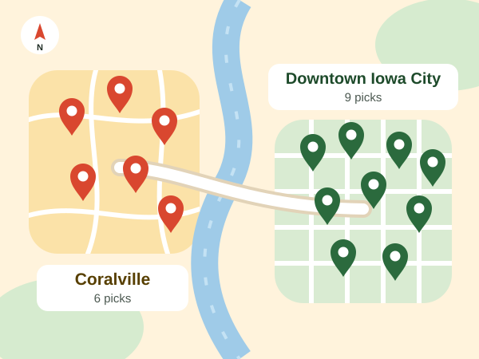

The Student Guide to Healthy Restaurants Downtown Iowa City
Eating out most days doesn't have to mean giving up on eating well. Iowa City Healthy Eats is a student-written guide to the best healthy restaurants downtown Iowa City and Coralville have to offer, made for University of Iowa students who grab most meals between classes, shifts, and workouts. For every spot we list the healthiest order, what it costs, its calories, and a high-protein pick, so finding healthy food Iowa City students actually want to eat takes seconds, not a menu deep-dive.
- 15 restaurants
- 3 guides
- Updated October 2026

Pick the Guide That Fits Your Day
Each guide features five restaurants you won't see on the other two, so every page gives you new places to try.
-

On a tight budget
Five filling meals that each ring up under $10, from a $6.50 turkey and white bean chili to lemongrass chicken rice paper rolls. Made for the week before payday.
Cheap healthy food under $10 -
Hungry after 10 p.m.
Five spots in downtown Iowa City and Coralville that stay open late, with orders that beat a 1 a.m. slice: chicken pho, salmon poke, grilled fish tacos, and more.
Healthy late night food in Iowa City -

Training for something
Five places where one order gets you 58 grams of protein or more, with calories listed so you can hit your macros without meal prepping on Sunday.
High protein meals in Iowa City
How to Use This Guide
Every restaurant card follows the same layout, so you can compare spots in a few seconds.
- Pick your situation. Choose the budget, late-night, or high-protein guide based on the kind of day you're having.
- Read the healthiest order first. It's the most balanced meal on that menu, with its price, calories, and protein listed right under it.
- Switch to the high-protein pick on gym days. It's the order with the most protein that still skips the fryer.
- Check the neighborhood tag. Downtown Iowa City spots are easy to walk to; Coralville spots are a short bus or car ride west.
- Order it exactly as written. Smart swaps, like dressing on the side or fruit instead of chips, are already built into every order we list.
How We Choose the Best Healthy Restaurants Downtown Iowa City
Every restaurant on this site had to clear the same four rules before we added it.
- Real vegetables, not garnish. The healthiest order includes at least two servings of vegetables, beans, or fruit.
- At least 15 grams of protein. Enough to keep you full until your next meal instead of snacking an hour later.
- Under 650 calories. Every healthiest order on the site lands between about 390 and 610 calories.
- Nothing deep-fried. Both the healthiest order and the high-protein pick are grilled, roasted, steamed, or fresh.
Calories and protein are our best estimates for each order as written, rounded to the nearest 10 calories and the nearest gram.

Who Puts This Guide Together
Iowa City Healthy Eats is written by two University of Iowa students who eat out more than they'd like to admit. Priya Halvorsen is a senior studying nutrition who reads every menu like a food label. Marcus Delacroix-Beck is a junior on a club rowing team who needs a lot of protein and has very little time to cook. They order every meal on this site themselves, ask about swaps at the counter, and update the guide every semester.
Not sure where to start? Match the guide to your day: cheap healthy food under $10 when money is tight, healthy late night food in Iowa City when you're up past 10 p.m., or high protein meals in Iowa City after a workout.